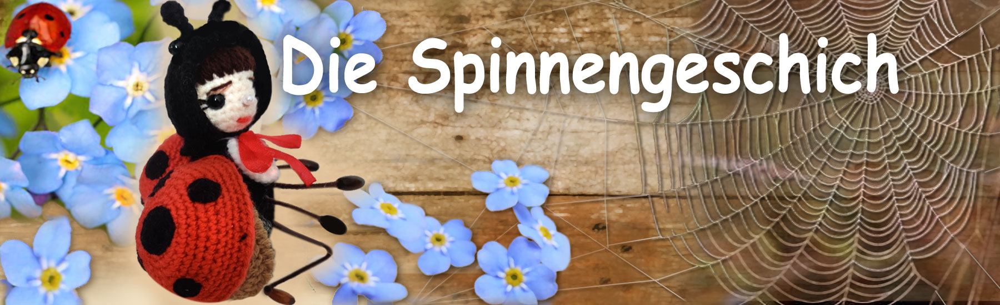

Märchen von Philomur, dem Kater
getreu aufgezeichnet von seinem treuen Bewunderer — Michel, der Rattenjunge

🕸️ Die Spinnengeschichte 🕸️
Kapitel 1 | Kapitel 2 | Kapitel 3 | Kapitel 4 | Kapitel 5 | Kapitel 6 | Kapitel 7 | Kapitel 8
(🐞 Ein Märchen über Marienkäfer Vera und die Spinne Boris 🕷️)
Kapitel 1. Eine ungewöhnliche Begegnung
An diesem Tag spielte die Sonne mit Lichtflecken im Staub. Ein leichter Wind wehte durch die Ritzen der alten Scheune und brachte den Duft von trockenem Heu und kühlem Schatten mit sich. Der Marienkäfer Vera hatte gar nicht vor, hineinzufliegen — sie wollte sich nur für einen Moment vor der Hitze schützen. Die Scheune erschien ihr still und leer, fast märchenhaft. Durch die schmalen Spalten drangen Lichtstrahlen — wie goldene Fäden, die in der Luft gespannt waren. Doch kaum war sie ein wenig weiter hineingeflogen, veränderte sich alles. Etwas blieb an ihrem Beinchen haften. Dann — an einem Flügel.
Verzweifelt schlug sie mit den Flügeln, um sich zu befreien — und geriet direkt in eine feine, unsichtbare Falle.
Das Spinnennetz federte und spannte sich, klammerte sich an Flügel und Beinchen. Vera bekam Angst.
Je mehr sie sich zu befreien versuchte, desto stärker verhedderte sie sich in den klebrigen Fäden.
— Ach… was ist das?.. Hilfe… — flüsterte sie kaum hörbar.
Aus einer tiefen Spalte in der Wand erklang ein leises, schweres Brummen. Zuerst ganz leise, dann immer deutlicher.
Es raschelte — jemand bewegte sich durch Staub und Dunkelheit.
— Aha! Gefangen… — knurrte eine mürrische Stimme.
— Wer hat mir denn hier mein ganzes Netz zerrissen?
Eine große Spinnenpfote erschien, dann ein Auge im Schatten.
Die Spinne Boris kroch langsam ins Licht, in der Erwartung, eine saftige Fliege zum Mittagessen zu sehen.
Doch stattdessen erblickte er eine winzige, zitternde Gestalt mit schwarzen Punkten auf scharlachroten Flügeln.
— Verzeihen Sie… Herr Spinne… — piepste Vera und zog sich ängstlich zusammen.
— Ich… ich wollte nicht… Es war ein Versehen…
Auf dem Dach, zwischen den Brettern, saß wie immer untätig die Biene Zhuzha.
Sie hörte die ängstliche Stimme und blickte hinein.
Ihre lebhafte Fantasie malte sofort ein schreckliches Bild aus.
— Alarm!! Hilfe!!! — schrie sie so laut, dass sie einen Spatz vom Apfelbaum aufscheuchte.
— Boris frisst Vera! Er will sie fressen! Hilfe! Jemand soll helfen!!! Alarm!!!
Und wirbelnd, kreischend und aufgeregt plappernd flog sie davon, ohne auf eine Antwort zu warten.
Sie wusste nicht, dass Spinnen keine Marienkäfer fressen. Details interessierten sie nicht —
hauptsache, es geschah etwas Aufregendes. Und wo etwas geschah, da war Zhuzha nicht weit.
In der Scheune aber war es weiterhin still.
Vera rührte sich nicht mehr. Sie hielt den Atem an und wartete auf ihr Schicksal,
ohne zu wissen, was dieser furchterregende, große, alte Spinne sagen würde.
Und Boris, geblendet vom Licht, spürte plötzlich:
Diese Begegnung war alles andere als gewöhnlich.
Kapitel 2. Archibald und Maxim
An einem heißen Mittag, als selbst die Libellen träge und widerwillig flogen
und der Misthaufen einen dichten, beinahe philosophischen Duft verströmte,
sprühte das Kaninchen Maxim nur so vor Energie.
Er rannte hin und her, fuchtelte mit den Pfoten und verteilte Flugblätter an alle,
denen er begegnete — an Käfer, Küken, sogar an einen gleichgültigen Maulwurf,
der nur für einen kurzen Moment aus seinem Bau hervorschaute.
— Die Rechte der Würmer sind die Rechte von uns allen! — wiederholte er wie eine Beschwörung.
— Wer, wenn nicht wir? Wo, wenn nicht hier? Wann, wenn nicht jetzt?!
Doch der Tag war glühend heiß, und die Würmer selbst, für deren Rechte er zu kämpfen gedachte, hatten sich längst tief in den kühlen Mist zurückgezogen. Dort war es gemütlich und ruhig, und keinerlei Rechte forderten sie ein. Sie waren mit ihrem Leben vollkommen zufrieden und antworteten auf alle Parolen, Megafone und Plakate einzig mit Schweigen. Maxim hingegen sehnte sich leidenschaftlich nach Masse, Öffentlichkeit und lautem Effekt. Er brauchte ein Publikum, bewundernde Blicke und ein Foto auf dem Titelblatt der Zeitschrift „Lebendige Erde“.
Und plötzlich… da sah er ihn — würdevoll, wichtig.
Genau das, was er brauchte!
Auf dem sonnenüberfluteten Pfad schritt gemächlich der Käfer Archibald dahin.
Ein Maikäfer — so, wie man ihn sich in Träumen vorstellt:
im Frack, mit Zylinder und einer feinen Degenklinge in einer mit goldenen Schuppen
verzierten Scheide.
Seine Fühler waren perfekt frisiert, sein Panzer glänzte wie frisch lackiert.
Er ging langsam, mit der Haltung eines Wesens,
das nicht spazieren geht, sondern gesehen werden will.
Maxim klopfte rasch den Staub von seiner Weste,
strich sich die Ohren glatt und eilte ihm entgegen,
bemüht, Zuversicht und Würde auszustrahlen.
— Ich begrüße Sie, Genosse Archibald!
Der Käfer hob eine Augenbraue — eine einzige, schuppige Linie.
— Ein Schwein ist dem Schwan kein Genosse, — erwiderte er mit kühler Höflichkeit
und wandte sich ab, als wäre die Luft plötzlich minderwertig geworden.
Maxim war einen Moment lang verwirrt, doch er dachte nicht ans Aufgeben.
— Völlig einverstanden, — lenkte er geschickt ein. —
Dann… Bürger Archibald!
Wir veranstalten ein höchst bedeutendes gesellschaftliches Ereignis!
Eine Kundgebung für die Rechte der hermaphroditischen Würmer!
Sie haben die einmalige Gelegenheit,
Ihre leuchtende gesellschaftliche Haltung zu zeigen!
Ohne eine Antwort abzuwarten,
zog er sofort ein Megafon hervor
(aus der Verpackung eines Pfefferminzbonbons gefertigt)
und brüllte so laut, dass selbst die Raupen erwachten:
— FREIHEIT UND GLEICHBERECHTIGUNG FÜR HERMAPHRODITISCHE WÜRMER!!!
Archibald zuckte zusammen. Seine Fühler bebten.
— Was?! — zischte er und drehte sich um. —
Du… du willst andeuten, dass ich… ein Wurm sei?!
Bist du bei Verstand, du langohriger Aufwiegler?
Das ist eine öffentliche Beleidigung! Öffentlich, verstehst du?!
Wie wagst du es, meine Käferehre
mit… mit irgendwelchen schleimigen Gestalten aus dem Mist in Verbindung zu bringen!
Er drehte sich blitzschnell um,
die Fühler schnellten nach oben,
eine Pfote legte sich auf den Degenknauf.
Sein Panzer funkelte vor Zorn.
— Jetzt wirst du tanzen, du langohriger Agitator!
Und es wäre beinahe etwas Schreckliches geschehen —
eine anschauliche Lektion über das Verhältnis von Worten und Konsequenzen —
wenn nicht Zhuzha aufgetaucht wäre.
Wie immer zur rechten Zeit und völlig unpassend
sauste sie summend über ihre Köpfe hinweg und schrie:
— Hilfe! Rettet sie! Boris will Vera fressen!
Kapitel 3. Die „Rettung“ von Vera
— Zu Hilfe! Rettet unsere Vera vor einem schrecklichen Schicksal!
Wo seid ihr, ihr Helden?! —
schrie Zhuzha und flog in alarmierenden Zickzacklinien über den Hof,
wie eine Sirene auf Flügeln.
Zunächst reagierte niemand.
Die Vögel versteckten sich im Gebüsch, die Mäuse in ihren Löchern.
Sogar der Erpel tat so, als ginge ihn das alles überhaupt nichts an.
Archibald und Maxim hoben gleichzeitig die Köpfe und sahen sich an.
— Welche Vera denn noch? — fragte Archibald missmutig.
— Und wer ist diese Spinne Boris? — hakte Maxim nach,
bereits eine große Schlagzeile witternd.
— In der Scheune! — plapperte Zhuzha. —
Dort ist es furchtbar! Eine Tragödie!
Dort… dort frisst er sie!
Archibald dachte einen Moment nach. Ach ja, dieser Marienkäfer… Sie hatte ihn nie besonders interessiert: zu bescheiden, zu still. Kein Flirt, keine Intrige, kein grelles Make-up auf den Flügeln. Nicht sein Stil. Doch er bemerkte die Blicke, die sich auf ihn richteten. „Wenn ich jetzt nicht eingreife“, dachte er, „werden sie glauben, ich sei gefühllos. Oder noch schlimmer — ein Feigling. Und das kann ich mir nicht erlauben!“ Und so vergaßen beide — der eine aus Eitelkeit, der andere aus Berechnung — den Streit, die Kundgebung, die Flugblätter und die Manifeste und eilten Zhuzha hinterher.
Einige Flugblätter blieben im Staub liegen, neben einer angebissenen Pflaume und einem Plakat mit der Aufschrift: „Alle Würmer sind gleich — aber manche sind gleicher.“
Am Eingang der Scheune schwang Archibald seinen Degen
und rief pathetisch, ohne sich um Details zu kümmern:
— Du seelenloser Schurke, Boris!
Wie wagst du es, ein junge Dame gefangen zu halten?!
Aus dem Schatten erklang eine ruhige Stimme:
— Gnädiger Herr,
ich bin eine einfache Spinne und habe niemanden gefangen.
Alles, was in mein Netz gerät,
wird nach den Gesetzen der Natur zu meinem Mahl.
Haben Sie selbst nicht die Früchte der Apfelbaum-Dame genossen,
die Jahr für Jahr der Welt süße Äpfel schenkt?
Archibald war verblüfft. „Der Frechdachs philosophiert“, dachte er und fand keine passende Antwort.
Boris fuhr fort:
— Doch wenn Sie darauf bestehen,
dass ich meine Beute freilasse…
vielleicht bieten Sie sich selbst als Ersatz an?
Diese Wendung gefiel Archibald ganz und gar nicht. Er zögerte, auf der Suche nach einer würdigen Erwiderung.
Plötzlich rief Vera,
die das Geschehen aus dem Netz beobachtet hatte, entsetzt:
— Nein! Nein!
Ich flehe Sie an, Herr Spinne, tun Sie ihm nichts!
Es ist meine Schuld.
Sie sind meinetwegen ohne Mittagessen geblieben.
Fressen Sie mich — wenn es nicht anders geht!
Archibald schöpfte sofort neuen Mut
und erklärte mit theatralischem Stolz, sich Boris zuwendend:
— Hören Sie!
Wenn eine Dame bittet, darf ein Gentleman nicht ablehnen!
Ich fordere Sie auf, ihren Willen zu erfüllen!
Andernfalls… fordere ich Sie zum Duell!
Maxim, der zwar nicht alles verstand,
aber spürte, dass die Situation politisch heikel war,
klopfte auf sein Megafon und verkündete:
— Frauenrechte sind alles!
Wenn die Mademoiselle den Wunsch äußert, gefressen zu werden,
ist das ihre freie Entscheidung!
Niemand hat das Recht, sie dafür zu verurteilen!
— Und wenn Sie sie nicht fressen, Bürger Boris,
werden die Zeitungen über Diskriminierung schreiben!
Ganz auf der Titelseite:
„Spinne ignoriert Minderheiten!“
Boris seufzte.
Er begriff schnell, dass Diskutieren zwecklos war
und das Gespräch ermüdender als Hunger.
— Meine Herren, seien Sie versichert:
Ich werde die Gefühle der jungen Dame respektieren.
Ihre Wünsche werden gehört…
und berücksichtigt.
Und nun, wenn Sie erlauben,
verlassen Sie bitte mein Haus.
Archibald hob stolz das Kinn, als hätte er soeben eine ganze Nation gerettet, strich seine Fühler glatt, klopfte ein Staubkorn vom Frack und hob den Zylinder, um die Blicke einer eingebildeten Menge entgegenzunehmen. Dann entfernte er sich würdevoll und gemessen. Hinter ihm hüpfte Maxim davon, bereits zwei Artikel im Kopf formulierend: „Ein moderner Blick auf das Konzept der freien Wahl“ und „Spinnen und ihr patriarchales Netz: Herausforderungen der Zeit“.
Top of the pageKapitel 4. Vera und die Spinne Boris
Wer war hier eigentlich in die Falle geraten?
In Veras kleinem Kopf summten die Gedanken wie Bienen in einem Glas.
Da erklang aus dem Schatten eine Stimme —
unerwartet ruhig, sogar höflich:
— Mademoiselle, bitte beruhigen Sie sich, —
sagte die Spinne Boris und trat näher.
— Ich habe keineswegs vor, Ihnen wehzutun.
Außerdem… Marienkäfer sind für uns Spinnen ungeeignet.
Unverträglichkeit der Nahrung.
Boris half Vera vorsichtig, sich aus dem Netz zu befreien.
Während er die Fäden entfernte,
streifte er ihre Flügel ganz leicht, fast zufällig —
und war selbst überrascht,
wie fein und lieblich sie waren.
Zitternd, im zerknitterten Kleidchen,
bestäubt mit winzigen Staubkörnchen,
stand Vera mitten in der Scheune und wagte kaum zu atmen.
Alles Geschehene wirkte wie ein Traum —
seltsam, verworren, beunruhigend.
Boris setzte sich sanft auf einen staubigen Balken
und zog die Beine an sich.
— Vielen Dank, Herr Spinne, —
flüsterte Vera.
— Es tut mir so leid,
dass ich Ihr Netz beschädigt habe.
Bitte verzeihen Sie mir.
— Ach was, meine liebe Besucherin.
Ein Netz lässt sich neu weben,
doch ein Gespräch mit einer schönen Dame
ist eine weitaus seltenere Gelegenheit.
Er verbeugte sich leicht.
— Mein Name ist Boris.
— Sehr erfreut… Herr Boris.
Und Ihr Vatersname? —
fragte sie,
nicht zu vertraulich wirken wollend.
— Für Sie…
einfach Boris, —
sagte er unerwartet sogar für sich selbst
und wurde ein wenig verlegen.
— Darf ich Sie auf eine Tasse Tee einladen?
Mit Gebäck…
aus frischesten, erlesenen Blattläusen.
Eine ausgezeichnete Sorte,
persönlich gesammelt.
— Ich danke Ihnen, Herr Boris…
aber ich muss wirklich gehen.
Ich habe mich schon sehr verspätet.
Boris nickte, doch sein Blick blieb unablässig an ihren Augen hängen. In ihnen lag etwas Zerbrechliches — wie bei jenen, die feine Dinge wahrzunehmen vermögen: einen Sonnenstrahl auf einem Blütenblatt, das Rascheln des Grases, den warmen Duft des Regens.
Etwas Seltsames regte sich
in seinem alten, trockenen Spinnenherz.
— Darf ich fragen…
was Sie dazu bewogen hat,
meiner, sagen wir,
logischen Idee eines Tausches zu widersprechen? —
fragte er plötzlich.
— Ach…
fragen Sie bitte nicht, —
antwortete sie aufgeregt
und senkte den Blick.
— Aber Sie waren bereit,
sich für ihn zu opfern?
Der Geck Archibald,
so schien es mir,
hatte es nicht wirklich verdient.
— Ich verbiete Ihnen, Herr,
so über meinen Freund zu sprechen! —
flammte Vera auf.
— Herr Archibald…
er… er ist würdig…
er ist großartig…
er ist repräsentativ…
Sie brach ab
und begriff,
dass sie nicht über das sprach,
worüber eine junge Dame sprechen sollte.
— Verzeihen Sie.
Ich… ich muss gehen.
— Selbstverständlich, Mademoiselle.
Ich hatte keineswegs die Absicht,
Sie in Verlegenheit zu bringen.
— Lebwohl, —
sagte sie hastig.
— Ich… ich allein.
Vera glitt zur Spalte
und verschwand wie ein heller Funke
in der Dämmerung.
Boris blieb allein zurück.
Schweigend blickte er in die Dunkelheit,
wo sie eben noch gestanden hatte.
— Welch ein erstaunliches,
liebes Mädchen… —
flüsterte er.
— Ach, was rede ich da…
ein alter, nörgelnder Spinnenmann.
Wo käme ich denn hin,
solche reizenden Geschöpfe zu bewundern…
Er kroch zurück in seine Spalte und saß dort lange reglos. Kein Netz, kein Mahl, keine Gedanken an Pflichten. Nur Veras sanfte Stimme und ihre zitternden Wimpern standen ihm vor Augen. Er konnte nicht einschlafen. In seinem Herzen erwachte ein seltsames, längst vergessenes Gefühl — nicht Hunger, nicht Angst. Es war süß wie der erste Regen nach langer Dürre.
Top of the pageKapitel 5. Die Suche nach Vera
Einige Tage vergingen. Die Spinne Boris wurde ungewöhnlich nachdenklich. Er ließ sein Netz liegen, überprüfte keine Fallen, reparierte keine gerissenen Fäden. Seine Gedanken waren woanders. Er dachte an Vera.
Nun wusste er es ganz genau: In die Falle geraten war er selbst. Nicht in klebrige Fäden — sondern in das feinste Netz der Gefühle. Ein Netz, das man mit den Augen nicht sieht, das sich aber nicht zerreißen lässt. Er begriff selbst nicht, wie er plötzlich am Ausgang seiner Spalte stand, ins helle Tageslicht kroch und zu suchen begann… zu suchen nach zwei winzigen Flügeln — warm orangefarben, mit ordentlichen schwarzen Punkten.
Doch die Flügel waren nirgends zu finden.
Dafür war Zhuzha sofort zur Stelle.
Als sie Boris erblickte,
flatterte sie näher,
setzte sich auf einen morschen Ast
und beobachtete ihn,
gelegentlich vor Ungeduld summend.
— Und wozu all dieser Lärm ohne Grund? —
brummte Boris,
schon ohne seine frühere Strenge.
Er wollte sich gerade wieder in den Schatten zurückziehen,
doch plötzlich hörte er sich selbst sagen:
— Sag mal, Zhuzha…
weißt du zufällig,
wo Vera wohnt?
Sofort wurde er verlegen.
Zu offenherzig.
Das hatte er nicht gewollt.
Um die Situation zu glätten,
log er —
zum ersten Mal seit sehr langer Zeit.
— Sie hat bei mir…
einen Spitzensonnenschirm vergessen.
Ich wollte ihn zurückbringen.
Verstehst du.
— Einen Sonnenschirm? —
belebte sich Zhuzha.
— Ach, ich verstehe…
wie entzückend!
Natürlich weiß ich, wo sie wohnt!
— Dort,
bei den Himbeersträuchern,
neben der alten Eiche.
In der Nähe des Fliegenpilzes Timofey.
Du wirst dich nicht verirren.
Zhuzhas Augen leuchteten: in ihrem Kopf entstand bereits eine laute Geschichte, die sie mit Vergnügen in der ganzen Gegend verbreiten würde.
Doch Boris war das gleichgültig. Gerüchte kümmerten ihn nicht — nicht einmal über ihn selbst. Er ging einfach los. Leise, aber entschlossen. Er musste sie sehen.
Am Abend war er dort. Und — o Wunder — sie war tatsächlich da. Vera saß auf einem Blatt und blickte gedankenverloren in die Ferne. Im Licht der untergehenden Sonne schimmerten ihre Flügel sanft wie bernsteinfarbene Blütenblätter. Sie wirkte besonders leicht, fast durchsichtig — als sei sie aus Licht gewoben.
Boris trat näher.
Vorsichtig,
um sie nicht zu erschrecken.
Er hob ein Bein
und verbeugte sich höflich.
— Guten Abend, gnädige Frau…
Vera zuckte zusammen und drehte sich um.
Sie war überrascht.
Und…
nicht besonders erfreut.
Boris gefiel ihr nicht —
weder seine borstigen Beine,
noch der altmodische Ton,
noch diese plötzliche,
ungeschickte Fürsorglichkeit.
Doch sie war ein wohlerzogenes Mädchen
und antwortete daher:
— Guten Abend, Herr Spinne.
Ich freue mich, Sie zu sehen.
Wie geht es Ihnen?
Sie versuchte zu lächeln,
doch innerlich hatte sie nur einen Wunsch —
so schnell wie möglich zu verschwinden.
Boris bemerkte das.
Es tat ihm weh und war ihm peinlich.
Er wollte nicht aufdringlich sein.
— Ich bin nur…
spazieren gegangen…
einen alten Freund besuchen, —
sagte er leise
und verstand,
dass er wieder gelogen hatte.
— Ich möchte Sie nicht aufhalten.
Alles Gute, Mademoiselle.
Er verbeugte sich höflich und wandte sich langsam zum Gehen. Vera sah ihm nach. Etwas Seltsames regte sich in ihr — eine leichte Verlegenheit. Oder Mitleid. Oder vielleicht war es nur ein Windhauch.
Top of the pageKapitel 6. Boris’ Tat
Die Sonne neigte sich dem Untergang zu, und die Luft über der Lichtung erstarrte, durchtränkt vom Abendlicht. Boris warf einen letzten Blick auf Vera. Verlegen, verwirrt, traurig begriff er, wie lächerlich und bemitleidenswert er jetzt aussah. Ach, wie viel hätte er ihr sagen wollen, aber…
Da bemerkte er plötzlich,
wie ein Feldsperling
pfeilschnell herabstürzte —
direkt auf Vera zu.
— Vorsicht! —
rief Boris,
und seine Stimme,
sonst trocken und ironisch,
klang unerwartet scharf,
fast verzweifelt.
Vera drehte sich um — doch es war zu spät.
Die Spinne schoss nach vorn. In einem einzigen Augenblick, alle Kräfte sammelnd, sprang er — ohne zu denken, ohne zu zögern — und deckte mit sich den kleinen, zitternden Körper des Marienkäfers.
Im nächsten Moment befand er sich im Schnabel des Sperlings. Dieser bemerkte den Austausch nicht und schwang sich zufrieden zwitschernd in den Himmel. Alles geschah so schnell, dass Boris nicht einmal Zeit hatte, Angst zu verspüren. Ein scharfer, brennender Schmerz durchzuckte seinen kleinen Körper. Die Welt verschwamm.
Und dann — Stille. Er flog nicht mehr und fiel nicht mehr. Er schien sehr langsam durch ein durchsichtiges Lichtgewebe zu treiben — weich und leicht wie Frühlingsnebel. Es gab keinen Schmerz mehr, keine Angst, keine Traurigkeit.
Er hatte Licht nie geliebt — doch dieses war anders. Nicht blendend und nicht hart, sondern warm und still, wie die Stimme eines alten Freundes. Zum ersten Mal seit vielen Jahren fühlte er weder Schwere noch Nörgelei noch Einsamkeit. Nur Frieden.
Er blickte hinab und sah alles, was er gekannt und geliebt hatte: die Scheune, die Spalte unter dem Dach, überspannt von einem komplizierten, eleganten Netz; die alte Eiche, den Teich, die vom Sonnenuntergang überflutete Lichtung; den Geflügelhof — ewig erfüllt von Lärm, Summen, Krähen und dem ungeordneten Bewegen des Lebens. Boris verstand: Dorthin würde er nicht zurückkehren.
Und dennoch war er nicht traurig. Er lächelte sogar bei sich. Ja, das Leben war vergangen. Aber nicht vergebens. Er wusste nicht genau, was es gewesen war — Weisheit, Schönheit, Liebe oder Selbstaufopferung. Wahrscheinlich alles zusammen. Oder einfach ein einziges wichtiges Augenblick, der ein ganzes Leben in Licht verwandelte.
Und unten,
auf der Lichtung,
stand Vera,
unfähig, sich zu bewegen.
— Boris!.. Nein!.. —
ihr Schrei war schwach,
verspätet,
verlöschend.
Der Sperling war bereits am Himmel verschwunden und trug den kleinen Helden fort. Auf der Erde, zwischen den Grashalmen, blieb nur ein einziges schwarzes Beinchen zurück. Vera wandte instinktiv den Blick ab. Der schreckliche Anblick durchbohrte sie bis ins Innerste. Sie zitterte vor dem Erlebten — und zugleich wuchs in ihr das Verständnis: Er hatte sie gerettet. Er hatte sein Leben für sie gegeben.
Er — der seltsame, brummige, düstere Boris. Der, der in einer Spalte lebte und das Sonnenlicht nicht mochte. Und im letzten Augenblick zu einem wahren Helden wurde. In ihrem kleinen Kopf lief ein schwieriger Prozess: Neubewertung, Schmerz, Scham, das Begreifen wahrer Freundschaft und Liebe.
Top of the pageKapitel 7. Das Leben geht weiter
Doch natürlich war dies noch nicht alles.
Zhuzha — jene Biene,
die Neuigkeiten einfach nicht für sich behalten kann —
beobachtete das Drama aus der Ferne
und stellte sich bereits vor,
wie sie es in der ganzen Gegend verbreiten würde.
— Stellt euch das nur vor!
Boris!
Ja, ja, genau der —
der alte Griesgram aus der Scheune!
Wer hätte das gedacht!
Verliebt wie ein Junge!
Hat ein Auge auf ein junges Mädchen geworfen…
Sie flog von den Gänseblümchen zu den Espen,
vom Fliegenpilz zum Kürbis
und summte überall:
— Und sie —
so eine Bescheidene!
Geht mit gesenktem Blick,
leiser als Wasser,
niedriger als Gras…
Und selbst —
hat sie sich also
mit dem alten Kerl eingelassen!
Die Geschichte löste weder Kundgebungen noch allgemeine Trauer aus. Boris war nicht beliebt: alt, verschlossen, immer mit Spott. Man weinte nicht um ihn.
Nur Daisy Rita —
weiß,
üppig
und selbstbewusst —
nahm sich alles plötzlich sehr zu Herzen.
— Wie kann das nur sein?! —
empörte sie sich.
— Vera!
Ein schlichtes,
graues,
unscheinbares Ding…
Und er —
für sie!
Dabei war er doch
gar nicht so klug,
wie alle dachten.
Und sein Geschmack…
nun ja…
recht unerquicklich.
Daisy Rita schmollte:
— Und ich!
Ich bin doch schön!
Und für mich —
niemand.
Weder eine Spinne,
noch ein Käfer,
noch eine Ameise…
Niemand!
Ist das denn gerecht?
Ringsum summten die Bienen, die Blätter raschelten, der Erpel quakte — und das Leben floss, wie gewöhnlich, seinen Lauf. Nur an der Spalte in der Scheune war es, als wäre es ein wenig stiller geworden.
Top of the pageKapitel 8. Vergissmeinnicht
Tränen liefen Vera in feinen Bächlein über die Wangen. Sie weinte leise und verbarg ihr Gesicht unter den Beinchen. Sie wollte fortgehen, sich verstecken, verschwinden.
Doch nach Hause konnte sie nicht zurück. Dort war alles wie zuvor, und hier… hier war es geschehen. Sie hätte nicht mehr sein können — doch Boris war es, der nicht mehr da war.
Die Welt ringsum schien unverändert: die Bienen summten, der Wind spielte mit den Blütenblättern, auf dem Teich tanzten Sonnenreflexe. Und doch war alles anders geworden. Sie hätte ihr Leben verlieren können — doch sie hatte einen Freund verloren. Einen Freund, von dem sie nicht einmal begriffen hatte, dass sie von ihm träumte.
Barfuß über die Tautropfen, mit den Beinchen kleine blaue Blümchen sammelnd, ging Vera über die Wiese. Vergissmeinnicht… Sie wählte sie nicht bewusst. Ihr Herz führte sie.
Und da — die alte Scheune. Die Spalte in der Ecke. Dasselbe Halbdunkel. Derselbe Geruch: Staub, Holz und Vergessen. Und oben — das Netz. Fein, schimmernd, als wäre es lebendig.
Früher hatte es Angst gemacht, nun war es das Letzte, was von ihm geblieben war. Vera seufzte, schloss die Augen und begann behutsam, vorsichtig, die Vergissmeinnicht an den Fäden des Netzes aufzuhängen.
Eine Blume —
und das Netz zittert,
als würde es atmen.
Die zweite —
und es scheint,
als lächle ein Faden.
Die dritte —
wie ein Seufzer.
Jeder Zweig, jedes Blütenblatt — wie ein Wort. Wie Dankbarkeit. Wie Erinnerung. Nun war das Netz wie eine Blumenwiese geworden. Es fing nicht mehr und erschreckte nicht mehr. Es bewahrte und erinnerte.
— Danke, mein guter, edler Freund, — flüsterte Vera. — Du bist nicht verschwunden. Du bist da. Du wirst hier bleiben — in diesem Netz, in diesen Vergissmeinnicht, in meiner Erinnerung und in meinem Herzen. Ich werde dich nie vergessen.
Und irgendwo, hoch, hoch oben, dort, wo die Wolken enden und das Licht beginnt, trieb langsam eine kleine, regenbogenfarbene Silhouette durch den Himmel.
Sie wusste nicht, wo sie ankommen würde, aber sie wusste: Die Welt, in der sie gewesen war, war wunderschön. Und der Weg war nicht umsonst gewesen. Und alles war — richtig.
Epilog
Dieses Märchen ist allen stillen Herzen gewidmet,
die zu lieben verstehen,
ohne bemerkt zu werden.
🌸 🌸 🌸
❤️ Denen,
die mehr geben,
als sie erhalten.
Denjenigen,
die Güte
leise,
ohne Worte,
in die Welt einweben.
Und jenen,
die — wie Boris und Vera —
eine Spur
aus sonnigem Licht hinterlassen,
die niemals verlöscht.
Ende
😊 Zum Seitenanfang
🌟 Fragen und Aufgaben für junge Leser
1. Worum geht es in diesem Kapitel? Erzähle die Geschichte in 3–5 Sätzen.
2. Wer ist die Hauptfigur in diesem Kapitel? Beschreibe sie: Aussehen, Charakter und Stimmung.
3. Wenn du der Hauptfigur eine Frage stellen könntest, welche wäre das? Schreibe sie auf — und versuche, sie aus der Sicht der Figur zu beantworten.
4. Welche Entscheidung hat jemand in diesem Kapitel getroffen? Stimmst du ihr zu? Was würdest du anders machen?
5. Finde 5–10 neue Wörter im Kapitel. Schreibe sie auf, schlage ihre Bedeutung nach und bilde mit jedem Wort einen Satz.
6. Wähle deine Lieblingsstelle oder deinen Lieblingsmoment. Warum ist er dir besonders aufgefallen?
7. Stell dir eine kurze zusätzliche Szene vor, die als Nächstes passieren könnte. Schreibe 3–6 Zeilen Dialog.
8. Gib diesem Kapitel einen neuen Titel. Erkläre, warum du ihn gewählt hast.
9. Wie hat dich dieses Kapitel fühlen lassen? Wähle drei Wörter (zum Beispiel: neugierig, besorgt, glücklich, überrascht) und erkläre deine Wahl.
10. Wähle eine Szene, die du am besten in Erinnerung behalten hast. Zeichne sie und füge kleine Details hinzu, die dir wichtig erscheinen.